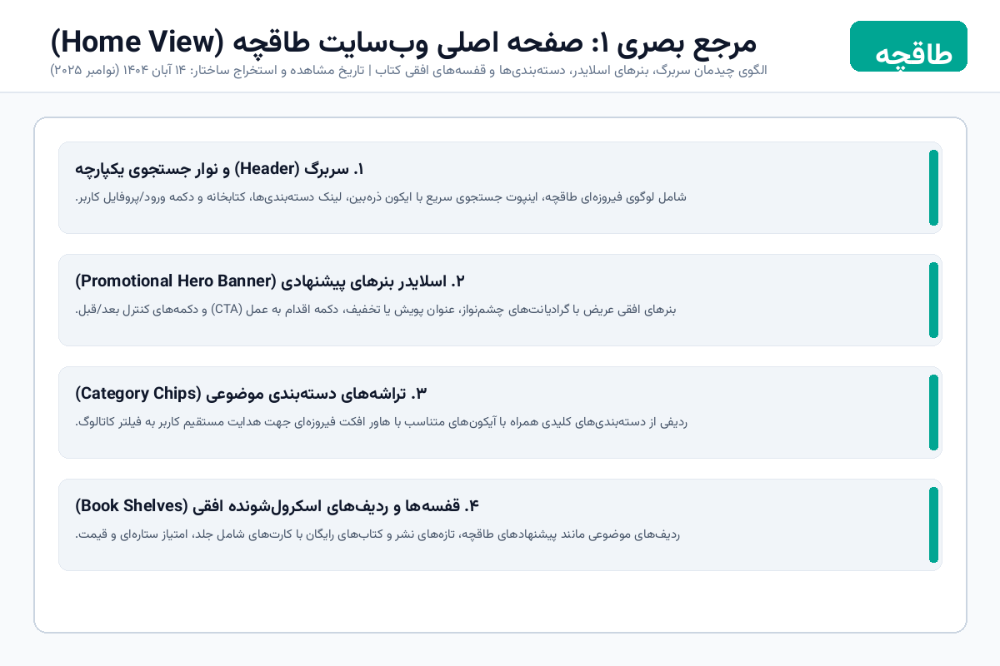
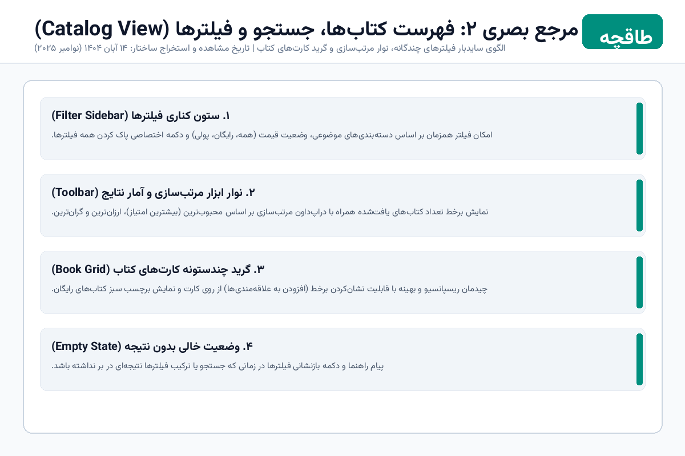
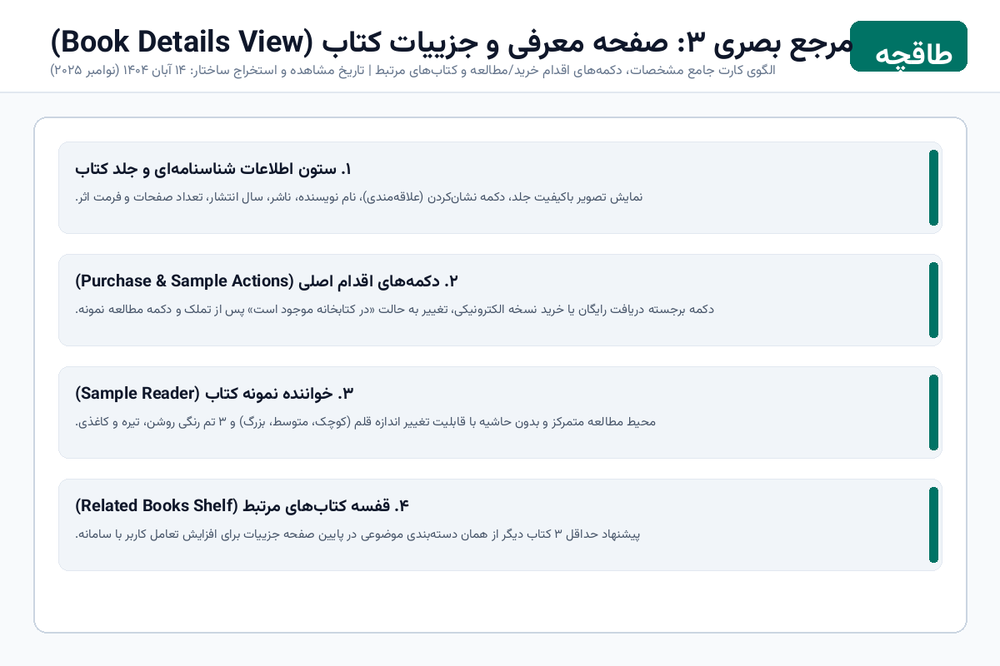

این پروژه با هدف بازآفرینی تجربه کاربری و قابلیتهای اصلی سامانه کتابخوان طاقچه در چارچوب تمرین اول درس برنامهسازی وب دانشگاه صنعتی شریف پیادهسازی شده است. تمرکز محوری این تمرین بر تسلط عمیق بر استانداردهای اصیل وب (HTML معنایی، CSS پیشرفته، مدیریت حالت و مسیریابی با JavaScript خام) و پرهیز کامل از فریمورکها و کتابخانههای جانبی استوار بوده است.
طبق بند ۱ و ۵ راهنمای تمرین، ۳ نمای مرجع از وبسایت طاقچه شامل صفحه اصلی، فهرست کتابها و صفحه جزییات همراه با تاریخ مشاهده استخراج گردید تا به عنوان مبنای چیدمان، سلسلهمراتب و هویت بصری پروژه مورد استفاده قرار گیرند.



فرایند توسعه برنامه مطابق اصول مهندسی نرمافزار ایجنتی و راهنمای تمرین به صورت فازهای مستقل و روی نتایج گام قبل به شرح زیر اجرا شد:
hash و URLSearchParams جهت امکان بوکمارک و باز کردن مستقیم در زبانه جدید، همراه با مدیریت خطای شناسه نامعتبر و قفسه کتابهای مرتبط.localStorage.
تمام کتابها در آرایهای به نام BOOKS_DATA در فایل js/books.js نگهداری میشوند. هر آبجکت کتاب شامل فیلدهای استاندارد زیر است:
id (رشته یکتا، مانند book-1)title و author (عنوان و نام نویسنده به فارسی)category (دستهبندی موضوعی نظیر «داستان و رمان»، «روانشناسی»، «مدیریت»، «فلسفه»)cover (مسیر نسبی تصویر جلد وکتور SVG)price (عدد صحیح به تومان؛ عدد 0 نشاندهنده کتاب رایگان است)rating (عدد اعشاری از ۵)sampleText (آرایهای از ۳ الی ۴ بند متنی برای مطالعه در بخش کتابخوان)publisher، publishYear، pages و format
تابع normalizePersian متن ورودی کاربر و عناوین را قبل از تطبیق پردازش میکند:
trim()ي به ی و ك به کtitle و author به صورت ترکیبی با فیلترهای دسته و قیمت
چهار کلید مجزا در localStorage برای حفظ وضعیت تعریف شدهاند:
taaghche_current_user: مشخصات کاربر وارد شده شامل نام و شماره تلفنtaaghche_purchased_books: آرایه شناسههای کتابهای دریافتشده یا خریداریشدهtaaghche_favorite_books: آرایه شناسههای کتابهای نشانشده (علاقهمندیها)taaghche_reader_settings: آبجکت تنظیمات فونت و تم کتابخوان
تمام عملیات خواندن درون بلوکهای try / catch قرار دارند تا در صورت آسیبدیدگی یا خالی بودن دیتای مرورگر، برنامه با مقادیر پیشفرض پایدار به کار خود ادامه دهد و هیچ خطایی عملکرد کل سایت را متوقف نکند.
| چالش فنی | ریشه و حساسیت مسئله | راهحل پیادهسازیشده |
|---|---|---|
| استقلال کامل از فونت و شبکه | عدم استفاده از CDN یا وبفونتهای خارجی و حفظ ظاهر زیبای فارسی | کپی محلی فایلهای سبک WOFF2 فونت وزیرمتن و لودینگ از طریق @font-face محلی |
| امنیت و پیشگیری از XSS | الزام عدم استفاده از innerHTML برای متنهای ورودی کاربر |
استفاده انحصاری از textContent و ساخت المانهای امن DOM در جاوااسکریپت |
| اعتبارسنجی ارقام فارسی و انگلیسی | کاربران ممکن است شماره موبایل را با کیبورد فارسی یا لاتین تایپ کنند | توسعه تابع toEnglishDigits که تمام ارقام فارسی و عربی را پیش از Regex تبدیل میکند |
| عدم ثبت تکراری در کتابخانه | خرید مجدد یا کلیک مکرر کاربر نباید کتاب را دو بار به کتابخانه اضافه کند | بررسی وجود شناسه با includes() و تغییر برچسب دکمه به «در کتابخانه شما موجود است» |
| مسیریابی پایدار و رفرش | باز شدن لینک مستقیم کتاب در تب جدید یا رفرش مرورگر | پشتیبانی دوگانه از پارامترهای URLSearchParams و window.location.hash |
| دسترسپذیری و بستن پنجرهها | بستن مودالها با کلید Escape و هدایت مجدد فوکوس | شنونده سراسری keydown و ذخیره lastFocusedElement جهت بازگرداندن فوکوس |
تمام آزمونهای هفتگانه اعلامشده در بخش ششم سند تمرین با دقت و جامعیت مورد ارزیابی قرار گرفتند:
| ردیف | مسیر و اقدام آزمون | ورودی داده شده | رفتار مورد انتظار | نتیجه مشاهدهشده در عمل | وضعیت |
|---|---|---|---|---|---|
| ۱ | صفحه اصلی، بنر، دستهها و پیوندها | باز کردن اولیه index.html |
نمایش کامل بنر، ۳ ردیف کتاب اسکرولی، دکمههای قبلی/بعدی | تمام بنرها، ۴ دسته و ۳ قفسه کتاب بدون نقص رندر شدند | موفق (PASSED) |
| ۲ | جستجوی ترکیبی و فیلترها | جستجوی «صادق»، فیلتر رایگان، مرتبسازی ارزانترین | فیلتر همزمان، بهروزرسانی شمارنده و نمایش «بوف کور» | شمارنده ۱ نتیجه نشان داد؛ با پاک کردن فیلترها همه برگشتند | موفق (PASSED) |
| ۳ | آزمون حالت بدون نتیجه (Empty State) | جستجوی عبارت ناموجود «xyz999» | نمایش پیام واضح و دکمه بازگشت به فهرست | کارت هشدار با دکمه پاک کردن فیلترها با موفقیت نمایان شد | موفق (PASSED) |
| ۴ | شناسه مستقیم و شناسه نامعتبر | باز کردن #book?id=book-1 و سپس id=invalid-99 |
نمایش کامل بوف کور و سپس نمایش پیام «کتاب یافت نشد» | جزییات با رفرش باقی ماند؛ شناسه خراب دکمه بازگشت داد | موفق (PASSED) |
| ۵ | ورود کاربر و دریافت/خرید کتاب | ورود با نام «نیما» و شماره «۰۹۱۲۳۴۵۶۷۸۹»، خرید کتاب | اعتبارسنجی ۱۱ رقمی، تایید خرید و جلوگیری از ثبت تکراری | کاربر ثبت شد، نام در سربرگ نشست و کتاب در کتابخانه قرار گرفت | موفق (PASSED) |
| ۶ | نشانکردن و حذف از علاقهمندیها | نشانکردن دو کتاب و حذف یکی، سپس رفرش صفحه | پایداری در LocalStorage و بهروزرسانی شمارنده سربرگ | پس از بارگذاری مجدد، کتاب مورد نظر دقیقاً حفظ شده بود | موفق (PASSED) |
| ۷ | مطالعه نمونه و ماندگاری تنظیمات | تغییر فونت به «بزرگ» و تم به «کاغذی (سپیا)» | اعمال تغییر و حفظ تنظیمات پس از رفرش صفحه | تم و سایز فونت پس از رفرش مجدداً با موفقیت اعمال شدند | موفق (PASSED) |
| ۸ | ریسپانسیو ۳ عرض و پیمایش کیبورد | تست در ۳۶۰px، ۷۶۸px، ۱۴۴۰px و فشردن کلید Escape | عدم اسکرول افقی ناخواسته، بستن مودالها با Escape | بدون اسکرول افقی اضافی، فوکوس دقیق و بدون خطای کنسولی | موفق (PASSED) |
assets/fonts/.assets/covers/.وباپلیکیشن طاقچه با رعایت کامل تمام اصول کدنویسی تمیز، تفکیک کامل لایههای داده، منطق و ظاهر و استانداردهای تعیینشده در صورت تمرین به پایان رسید. پروژه در قالب ساختاری منسجم، به همراه فایلهای اجرایی و مستندات تحلیلی در ریشه مخزن پروژه سازماندهی شده و آماده تحویل نهایی میباشد.